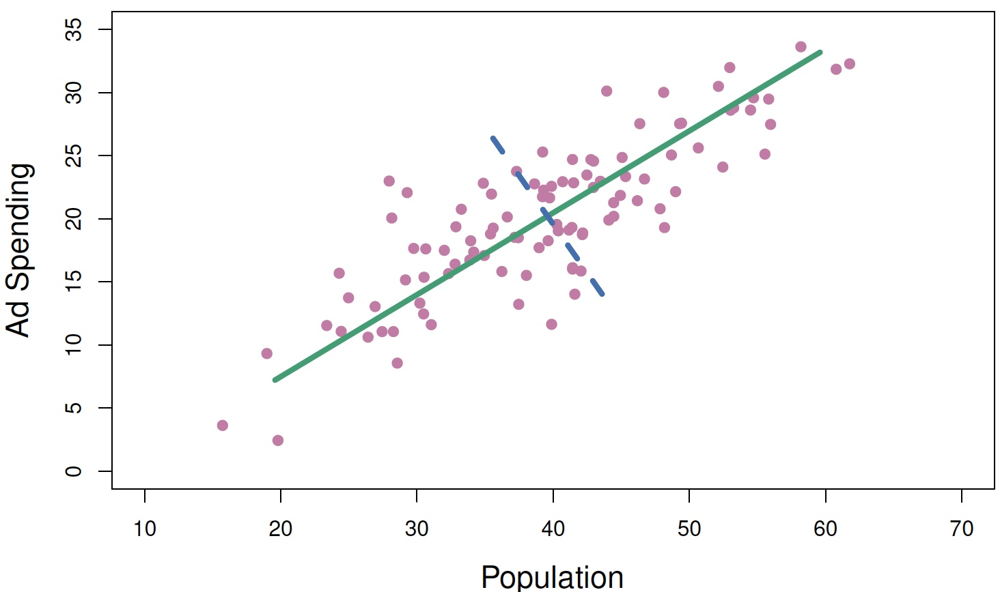
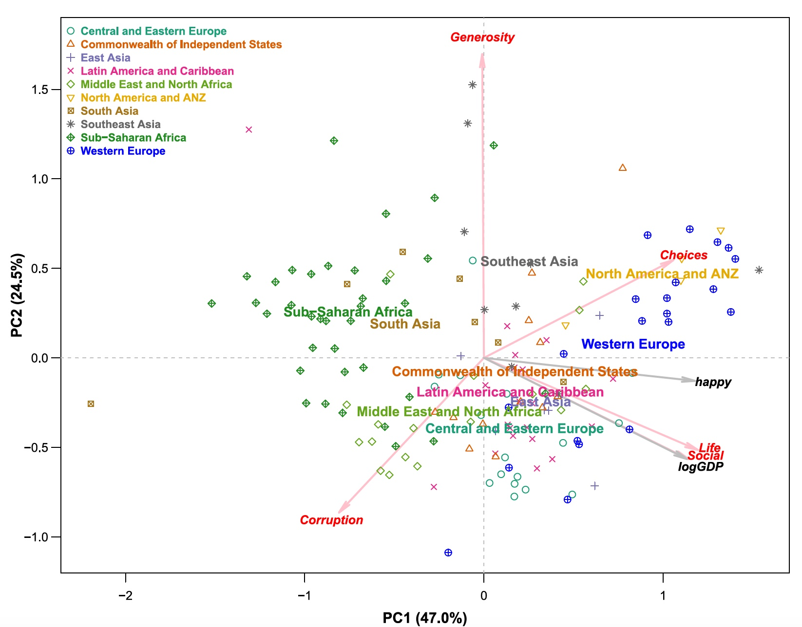
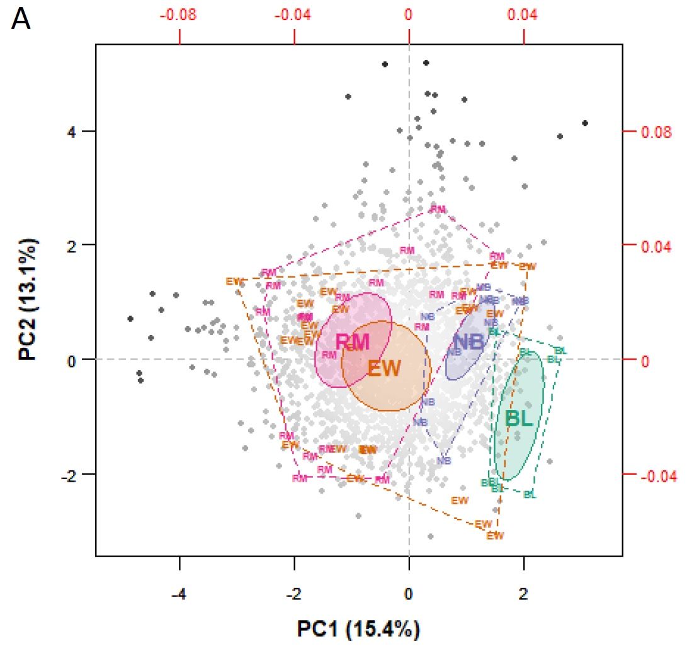
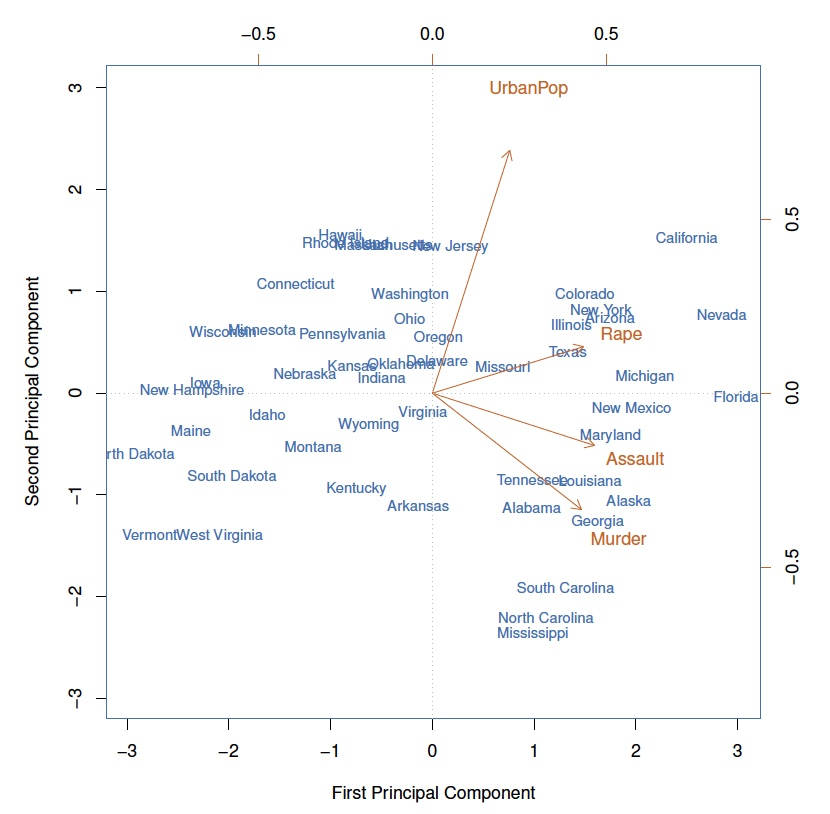
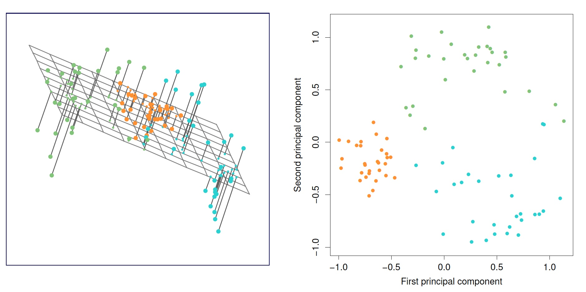
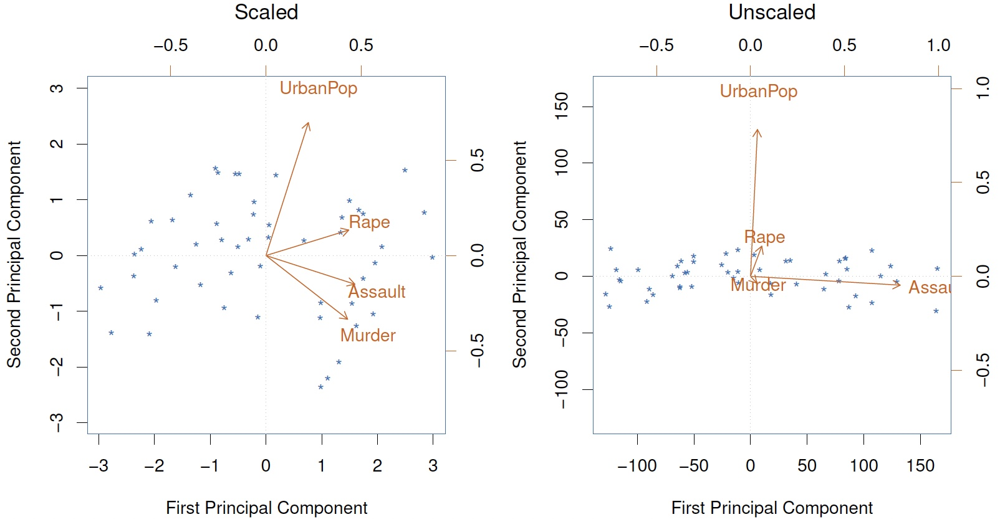
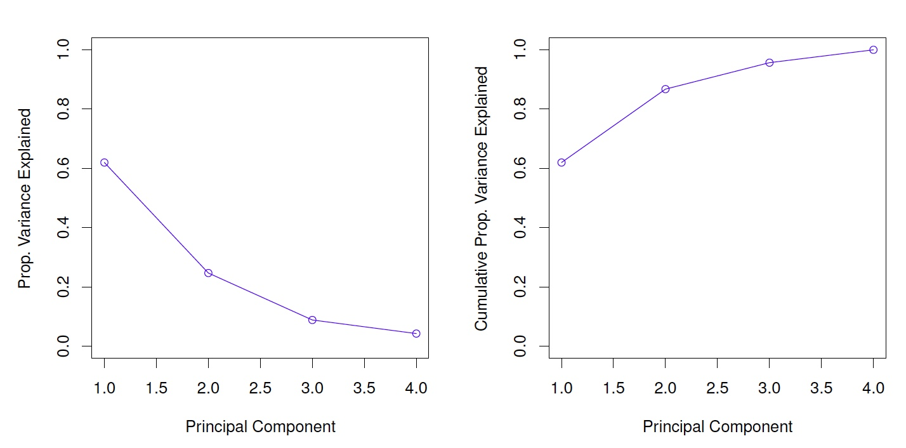

Análise Multivariada
Análise de Componentes Principais
IFMG - Campus Formiga
13 de novembro de 2023
Summário: Aula
Lista de Exercícios 1
Modelos de Regressão Linear: Foco em Previsão
Análise de Componentes Principais
Lab: Análise de Componentes Principais em R
Aprendizagem Supervisionada \(\times\) Não Supervisionada
Modelos de Regressão Linear
- Algoritmo de Aprendizagem Supervisionada
Análise de Componentes Principais
- Algoritmo de Aprendizagem Não Supervisionada
Aprendizagem Não Supervisionada
“Como podemos reduzir a dimensionalidade dos dados, mantendo as informações essenciais das variáveis e identificando os padrões de variação mais significativos entre elas?”
A Análise de Componentes Principais, é o algortimo não supervisionado para responder a esta pergunta.
Análise de Componentes Principais
PCA produz uma representação de baixa dimensão de um conjunto de dados.
Encontra uma sequência de combinações lineares dos variáveis que têm variância máxima e são mutuamente não correlacionadas.
Além de produzir variáveis derivadas para uso em problemas de aprendizagem supervisionada, a PCA também é uma ferramenta para visualização de dados, ou seja, é uma ferramenta para a Análise Exploratória de Dados.
Análise de Componentes Principais
Suponha que desejamos visualizar \(n\) observações com medições em um conjunto de \(p\) características (\(X_1,X_2, \ldots,X_p\)), como parte de uma análise exploratória de dados.
Poderíamos fazer isso examinando gráficos de dispersão bidimensionais dos dados, cada um dos quais contém as medições das \(n\) observações em duas das características.
Análise de Componentes Principais
Entretanto, temos \(p(p-1)/2\) gráficos de dispersão, por exemplo, com \(p = 10\), teríamos 45 gráficos.
Se \(p\) é grande, então certamente não será é viável observar todos;
Além disso, muito provavelmente nenhum deles será informativo, uma vez que cada um contém apenas uma pequena fração do total informações presentes no conjunto de dados.
É necessário um método melhor para visualizar as \(n\) observações quando \(p\) é grande.
Análise de Componentes Principais
Em particular, gostaríamos de encontrar uma representação de baixa dimensão dos dados que capturasse o máximo de informação possível.
Por exemplo, se pudermos obter uma representação bidimensional dos dados que capture a maior parte da informação, então poderemos representar graficamente as observações neste espaço de baixa dimensão.
Análise de Componentes Principais
O PCA fornece uma ferramenta para fazer exatamente isso.
PCA encontra uma representação de baixa dimensão de um conjunto de dados que contenha o máximo possível de variação (informação).
A ideia é que cada uma das \(n\) observações está no espaço \(p\)-dimensional, mas nem todas estas dimensões são igualmente informativas.
Análise de Componentes Principais
A PCA procura um pequeno número de dimensões que sejam tão informativas quanto possível, onde o conceito de informativa é medido pela quantidade que as observações variam ao longo de cada dimensão, ou seja, é medida pela variabilidade.
Cada uma das dimensões encontradas pelo PCA é uma combinação linear dos \(p\) caracteríticas (variáveis preditoras).
Obtendo os Componentes Principais
- O primeiro componente principal de um conjunto de características (\(X_1,X_2, \ldots,X_p\)) é a combinação linear das características que possue a maior variância.:
\[ Z_1 = \phi_{11}X_1 + + \phi_{21}X_2 + \ldots + \phi_{p1}X_p \]
Normalizada significa que: \(\sum_{j=1}^{p} \phi_{j1}^2 = 1\).
Nos referimos aos elementos \(\phi_{11},\ldots,\phi_{p1}\) como as cargas do primeiro componente principal.
Obtendo os Componentes Principais
Juntas, as cargas constituem o vetor de cargas (loading vector) do componente principal: \((\phi_{11}, \phi_{21}\ldots,\phi_{p1})^T\)
Assim, dado um conjunto de dados \(X\) \((n \times p)\), como calculamos o primeiro componente principal?
Obtendo os Componentes Principais
Como estamos interessados apenas na variância, assumimos que cada uma das variáveis em \(X\) foi centrada para ter média zero.
Procuramos então a combinação linear dos \(x\)’s amostrais da forma:
\[ z_{i1} = \phi_{11}x_{i1} + + \phi_{21}x_{i2} + \ldots + \phi_{p1}X_{ip} \qquad(1)\]
- que possui a maior variância amostral, sujeita a restrição \(\sum_{j=1}^{p}\phi_{j1}^2 = 1\).
Obtendo os Componentes Principais
- Portanto, o vetor de cargas do primeiro componente principal é a solução do seguinte problema de otimização:
\[ \begin{align*} \underset{\phi_{11},\ldots,\phi_{p1}}{maximizar} & \,\, \Bigl[\frac{1}{n}\sum_{i=1}^{1} \Bigl(\sum_{j=1}^{p}\phi_{j1}x_{ij}\Bigr)^2 \Bigr] \\ \text{sujeito a:} & \,\, \sum_{j=1}^{p}\phi_{j1}^2 = 1 \end{align*} \qquad(2)\]
Obtendo os Componentes Principais
\[ \frac{1}{n}\sum_{i=1}^{1} \Bigl(\sum_{j=1}^{p}\phi_{j1}x_{ij}\Bigr)^2 = \frac{1}{n}\sum_{i=1}^n z_{i1}^2 \]
Uma vez que \(\frac{1}{n}\sum_{1=1}^n x_{ij} = 0\), a média dos \(z_{11},\ldots,z_{n1}\) também é igual a zero.
Portanto, a função objetivo que maximizamos é apenas a variância amostral dos \(n\) valores de \(z_{i1}\).
Obtendo os Componentes Principais
Nos referimos aos \(z_{11},\ldots,z_{n1}\) como os scores do primeiro componente principal.
O problema descrito pela Equação 2 pode ser resolvido por duas técnicas de álgebra linear:
- Decomposição espectral (eigen decomposition).
- Decomposição em Valor Singular (SVD = singular Value Decomposition).
Teorema da Decomposição Espectral
Considere um vetor aleatório \(Z\):
\[ \textbf{Z} = \left(\begin{array}{c} z_1\\ z_2\\ \vdots \\z_p\end{array}\right) \]
Com matriz de variância-covariância dada por:
\[ \text{var}(\textbf{Z}) = \Sigma = \left(\begin{array}{cccc}\sigma^2_1 & \sigma_{12} & \dots &\sigma_{1p}\\ \sigma_{21} & \sigma^2_2 & \dots &\sigma_{2p}\\ \vdots & \vdots & \ddots & \vdots \\ \sigma_{p1} & \sigma_{p2} & \dots & \sigma^2_p\end{array}\right) \]
Considere as combinações lineares:
\[ \begin{array}{lll} z_1 & = & \phi_{11}x_1 + \phi_{12}x_2 + \dots + \phi_{1p}x_p \\ z_2 & = & \phi_{21}x_1 + \phi_{22}x_2 + \dots + \phi_{2p}x_p \\ & & \vdots \\ z_p & = & \phi_{p1}x_1 + \phi_{p2}x_2 + \dots + \phi_{pp}x_p \end{array} \]
\(Z\) é uma função dos dados aleatórios, e também é aleatório. Portanto, tem variância dada por:
\[ \text{var}(Y_i) = \sum\limits_{k=1}^{p}\sum\limits_{l=1}^{p}\phi_{ik}\phi_{il}\sigma_{kl} = \mathbf{\phi}'_i\Sigma\mathbf{\phi}_i \] Além disso, \(Z_i\) e \(Z_j\) tem covariância:
\[ \text{cov}(Z_i, Z_j) = \sum\limits_{k=1}^{p}\sum\limits_{l=1}^{p}e_{ik}e_{jl}\sigma_{kl} = \mathbf{e}'_i\Sigma\mathbf{e}_j \] Vamos coletar os coeficientes \(\phi_{ij}\) no vetor:
\[ \mathbf{\phi}_i = \left(\begin{array}{c} \phi_{i1}\\ \phi_{i2}\\ \vdots \\ \phi_{ip}\end{array}\right) \]
Portanto, podemos reescrever o problema de otimização na forma matricial como:
\[ \text{var}(z_1) = \sum\limits_{k=1}^{p}\sum\limits_{l=1}^{p}\phi_{1k}\phi_{1l}\sigma_{kl} = \mathbf{\phi}'_1\Sigma\mathbf{\phi}_1 \] Sujeito à restrição de que:
\[ \mathbf{\phi}'_1\mathbf{\phi}_1 = \sum\limits_{j=1}^{p}\phi^2_{1j} = 1 \]
Como obetemos os coeficientes \(\phi_{ij}\) dos CPs?
A solução envolve os autovalores e autovetores da matriz variância-covariância \(\Sigma\).
O Teorema da Decomposição Espectral nos permite afirmar que a matriz de variância-covariância pode ser escrita como a soma em relação dos autovalores p, multiplicada pelo produto do autovetor correspondente vezes seu transposto:
\[ \Sigma = \sum_{i=1}^{p}\lambda_i \mathbf{\phi}_i \mathbf{\phi}_i' \] É fácil ver que a variação total de \(X\) é o traço da matriz de variância-covariância, que é a soma das variâncias das variáveis individuais, que por sua vez é igual à soma dos autovalores:
\[ \begin{align} tr(\Sigma) & = \sigma^2_1 + \sigma^2_2 + \dots +\sigma^2_p \\ & = \lambda_1 + \lambda_2 + \dots + \lambda_p \end{align} \]
- Isso nos dará uma interpretação dos componentes em termos da quantidade da variação total explicada por cada componente.
Decomposição Espectral
A decomposição espectral da matriz de variância-covariância fornece os autovetores associados à esta matriz.
Cada autovetor é uma combinação linear das variáveis originais. Esses autovetores são os vetores das cargas dos componentes principais.
Cada coeficiente representa como as variáveis originais contribuem para a formação de um componente principal específico.
Os autovetores são determinados de tal forma que o primeiro autovetor explica a maior variabilidade dos dados, o segundo explica a segunda maior variabilidadem e assim por diante.
Portanto, esses coeficientes nos dizem como as variáveis originais estão relacionadas aos principais padrões de variabilidade dos dados.
Os autovalores obtidos na decomposição espectral representam a quantidade da variabilidade total explicada por cada componente principal. Quanto maior o autovalor, mais variabilidade o componente principal captura.
A variância de cada componente principal é diretamente relacionada ao seu autovalor. Quando você divide o autovalor pelo número de observações menos um (n - 1), obtém a variância explicada por aquele componente principal.
Essas variâncias indicam a importância relativa de cada componente na explicação da variabilidade dos dados.
Portanto, os autovalores e suas respectivas variâncias associadas nos dizem o quanto cada componente principal contribui para a explicação global da variabilidade nos dados.
A função
princompda linguagem R realiza uma análise de componentes principais sobre a matriz de correlações ou de covariâncias usando a funçãoeigen.Entretanto, é preferível utilizar a função
prcomp, que aplica a Decomposição em Valor Singular da matriz à matriz de correlações ou de covariâncias
Geometria dos Componentes Principais
O vetor de cargas \(\phi_1\) com elementos \(\phi_{11}, \phi_{21},\ldots,\phi_{p1}\) define uma direção no espaço de características ao longo da qual os dados variam mais.
Se projetarmos os \(n\) pontos de dados \(x_1,\ldots,x_n\) nesta direção, os valores projetados são os próprios scores do componente principal \(z_{11};\ldots; z_{n1}\).
Geometria dos Componentes Principais
Fig. 1. Interpretação Geométrica
Outros Componentes Principais
O segundo componente principal é a combinacão linear de \(X_1,\ldots,X_p\) que possui a variância máxima entre todas as combinações lineares que não são correlacionadas com \(Z_1\).
Os scores do segundo componente principal \(z_{12}, z_{22},\ldots,z_{n2}\) tem a forma:
\[ z_{i2} = \phi_{12}x_{i1} + + \phi_{22}x_{i2} + \ldots + \phi_{p2}x_{ip} \]
- sendo \(\phi_2\) o vetor de cargas do do segundo componente principal, com elementos \(\phi_{12}, \phi_{22},\ldots,\phi_{p2}\)
Outros Componentes Principais
Ocorre que restringir \(Z_2\) em não ser correlacionado com \(Z_1\) é equivalente a restringir a direção \(\phi_2\) a ser ortogonal (perpendicular) à direção \(\phi_1\). E assim por diante.
As direções dos componentes principais \(\phi_1, \phi_2, \phi_3,\ldots\) são a sequência ordenada de vetores singulares à direita da matriz \(X\), e as variâncias dos componentes são \(\frac{1}{n}\) vezes o quadrados dos valores singulares.
Existem no máximo \(min(n-1; p)\) componentes principais.
Projeções? Projeções que Maximizam a Variância?
Fig. 2. Uma silueta enigmática
Projeções? Projeções que Maximizam a Variância?

Fig. 3. Outra Projeção
Etapas da Análise de Componentes Principais
A Análise de Componentes Principais pressupões que as variáveis são correlacionadas!
Passo 1: Padronização das Variáveis
Passo 2: Redução da Dimensão
Passo 3: Comunicação dos Resultados
Comunicação dos Resultados
Fig. 4. Biplot: World Happiness Report 2021
Comunicação dos Resultados
Fig. 5. Biplot: Khan child cancer dataset consiste em um Matriz 63 × 2308 de dados de expressão gênica, para 63 crianças e 2308 genes.
Ilustração: Dados USAarrests
Para cada um dos 50 estados dos EUA, os dados contém o número de detenções por 100.000 residentes para cada um de três crimes:
Assault,MurdereRape, e `UrbanPop, a porcentagem da população de cada estado que vive em áreas urbanas.A PCA foi realizada após padronizar cada variável para terem média zero e desvio padrão um.
USAarrests: biplot
Fig. 6. biplot
USAarrests: Detalhes do Gráfico
A Figura 6 é conhecida como biplot, porque exibe ambos: os scores e as cargas dos componentes principais.
Os nomes dos estados em azul representam os scores dos dois primeiros componentes principais.
As setas laranja indicam os dois vetores de cargas dos dois primeiros componentes principais (com eixos na parte superior e a direita).
Por exemplo, a carga para
Rapedo primeiro componente é 0:54, e 0:17 para o segundo componente [Rapeestá centrado no ponto (0:54; 0:17)].
USAarrests: Vetores das Cargas dos CPs
| CP1 | CP2 | |
|---|---|---|
| Murder | 0.5358995 | -0.4181809 |
| Assault | 0.5831836 | -0.1879856 |
| UrbanPop | 0.2781909 | 0.8728062 |
| Rape | 0.5434321 | 0.1673186 |
\[ \begin{align*} z_{12} &= 0.54\text{Murder} + 0.58\text{Assault} + 0.54\text{Rape} + 0.28\text{UrbanPop} \\ z_{22} &= - 0.42\text{Murder} - 0.19\text{Assault} + 0.17\text{Rape} + 0.87\text{UrbanPop} \end{align*} \]
USAarrests: Interpretação
Na Figura 6, vemos que o primeiro vetor de cargas atribui peso aproximadamente igual a
Assault,MurdereRape, e com peso menor paraUrbanPop. Portanto, este CP corresponde aproximadamente a uma medida das taxas globais de crimes graves.O segundo vetor de cargas coloca a maior parte de seu peso em
UrbanPope muito menos peso nas outras características. Portanto, esse CP corresponde aproximadamente ao nível de urbanização do estado.
USAarrests: Interpretação
No geral, vemos que as variáveis relacionadas ao crime (
Assault,MurdereRape) estão localizadas próximas umas das outras, e que a variávelUrbanPopestá distante das outras três.Isto indica que as variáveis relacionadas com o crime são correlacionadas entre si – estados com altas taxas de homicídio tendem a ter altas taxas de agressão e de estupro – e que a variável
UrbanPopestá menos correlacionada com as outras três.
USAarrests: Interpretação
Podemos examinar as diferenças entre os estados através dos dois vetores de scores (\(z\)) dos CPs da Figura 6.
A discussão sobre os vetores de carga sugere que estados com elevados scores positivos no primeiro componente, como a Califórnia, Nevada e a Florida, têm taxas de criminalidade elevadas, enquanto estados como o Dakota do Norte, com scores negativos no primeira componente, têm taxas de criminalidade baixas.
A Califórnia também tem um score alto no segundo componente, indicando um alto nível de urbanização, enquanto o oposto é verdadeiro para estados como o Mississippi.
USAarrests: Interpretação
- Estados com scores próximos de zero em ambos os componentes, como Indiana, apresentam níveis aproximadamente médios de criminalidade e urbanização.
Outra Interpretação Geométrica dos CPs
- Os dois primeiros vetores de cargas dos componentes principais em um conjunto de dados tridimensionais simulados são mostrados no painel esquerdo da Figura 3, esses dois vetores de carga abrangem um plano ao longo do qual as observações têm a maior variância.
Outra Interpretação Geométrica dos CPs
Fig. 7. 90 dados simuladas em 3D. As observações são exibidas em cores para facilitar a visualização. Esq.: os dois primeiras vetores de cargas dos CPs abrangem o plano que melhor se ajusta aos dados. O plano é posicionado para minimizar a soma dos quadrados das distâncias a cada ponto.
PCA = hiperplano mais próximo das observacões
O primeiro vetor de cargas do primeiro CP tem uma propriedade especial: define a linha no espaço p-dimensional que está mais próxima das \(n\) observações (usando a média quadrada distância euclidiana como medida de proximidade).
A noção de componentes principais como as dimensões que estão mais próximos das \(n\) observações se estende além do primeiro componente principal.
Por exemplo, os dois primeiros CPs de um conjunto de dados geram o plano que está mais próximo das \(n\) observações, em termos da distância euclidiana quadrática média.
Scaling das variáveis é importante
Fig. 8. Scaling
Se as variáveis estiverem em unidades diferentes, recomenda-se escalonar cada uma para ter desvio padrão igual a um.
Se estiverem nas mesmas unidades, você pode ou não escalonar as variáveis.
Scaling das variáveis é importante
Nestes dados, as variáveis são medidas em unidades diferentes;
Assault,RapereMurdersão relatados como o número de ocorrências por 100.000 pessoas, eUrbanPopé a porcentagem da população do estado que vive em área urbana.Essas quatro variáveis têm variâncias 18,97, 87,73, 6.945,16 e 209,5, respectivamente. Conseqüentemente, se realizarmos PCA nas variáveis não escalonadas, então o primeiro vetor de cargas do primeiro CP terá uma carga muito grande para
Assault, uma vez que essa variável tem de longe a maior variância.O gráfico à direita na Figura 8 exibe os dois primeiros CPs dos dados
USArrests, sem escalonar as variáveis para ter desvio padrão um.Como previsto, o primeiro vetor de cargas coloca quase todo o seu peso em
Assault, enquanto o segundo vetor de cargas do componente principal coloca quase todo o seu peso noUrpanPop.Comparando isto com o gráfico da esquerda, vemos que a escala tem de facto um efeito substancial nos resultados obtidos.
Unicidade dos Componentes Principais
Cada vetor de carregamento de componente principal é único, até uma inversão de sinal.
Isto significa que dois softwares diferentes produzirão os mesmos vetores de cargas dos componentes principais, embora os sinais desses vetores possam ser diferentes.
Os sinais podem diferir porque cada vetor de carga de um CP especifica uma direção no espaço \(p\)-dimensional: inverter o sinal não tem efeito, pois a direção não muda.
Da mesma forma, os vetores de scores são únicos até uma inversão de sinal, uma vez que a variância de \(Z\) é igual à variância de \(−Z\).
Proporção da Variância Explicada (PVE)
Para entender a força de cada componente, estamos interessado em saber a proporção da variância explicada (PVE) por cada um.
A variância total em um conjunto de dados (assumindo que as variáveis foram centradas para ter média zero) é definida como:
\[ \sum_{j=1}^{p} V(X_j) = \sum_{j=1}^{p} \frac{1}{n} \sum_{i=1}^{n} x_{ij}^2 \]
Proporção da Variância Explicada (PVE)
- E a variância explicada pelo \(m\)-ésimo CP é:
\[ V(Z_m) = \frac{1}{n} \sum_{i=1}^{n} z_{im}^2 \] Pode ser demonstrado que:
\[ \sum_{j=1}^{p} V(X_j) = \sum_{m=1}^{M} V(Z_m) \] com \(M = \min(n-1,p)\)
Proporção da Variância Explicada (PVE)
Portanto, a PVE pelo \(m\)-ésimo CP é uma qtde positiva entre 0 e 1:
\[ \frac{\sum_{i=1}^{n} z_{im}^2}{\sum_{j=1}^{p} \sum_{i=1}^{n} x_{ij}^2} \] As PVEs somam 1. Em algumas análises, é usual fazer os gráficos da PVE e PVE acumulada, veja a Figura 9
Proporção da Variância Explicada (PVE)
Fig. 9. PVE e PVE Acumulada
Quantos componentes principais devemos usar?
Se usamos CPs como um sumário dos dados, quantos componentes serão suficientes?
Não há uma resposta simples para esta pergunta, pois a validação cruzada não é disponível para esse fim. Por que não?
Porque não temos uma variável resposta.
O gráfico da PVE anterior pode ser usado como guia: procuramos um “cotovelo”.
Resumo
A Análise de componentes principais, é um método estatístico multivariado que combina as informaçõesde diversas variáveis observadas nos mesmos casos em menos variáveis, chamadas componentes principais.
A informação é medida pela variância total das variáveis originais, e os componentes principais otimamente explicam a maior parte dessa variação.
Os CPs possuem propriedades geométricas que permitem uma visualização intuitiva e uma interpretação estruturada das principais características inerentes a um conjunto de dados multivariado complexo.